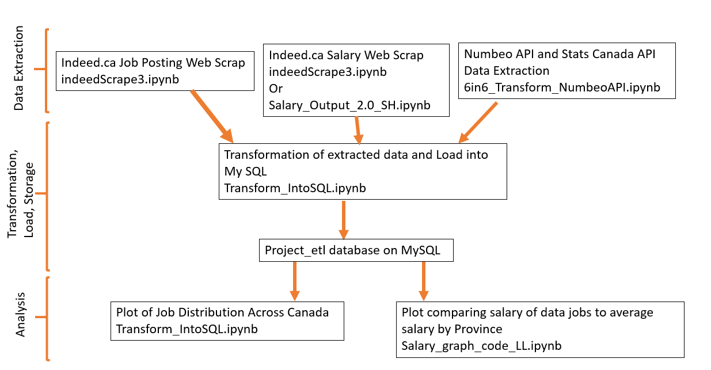
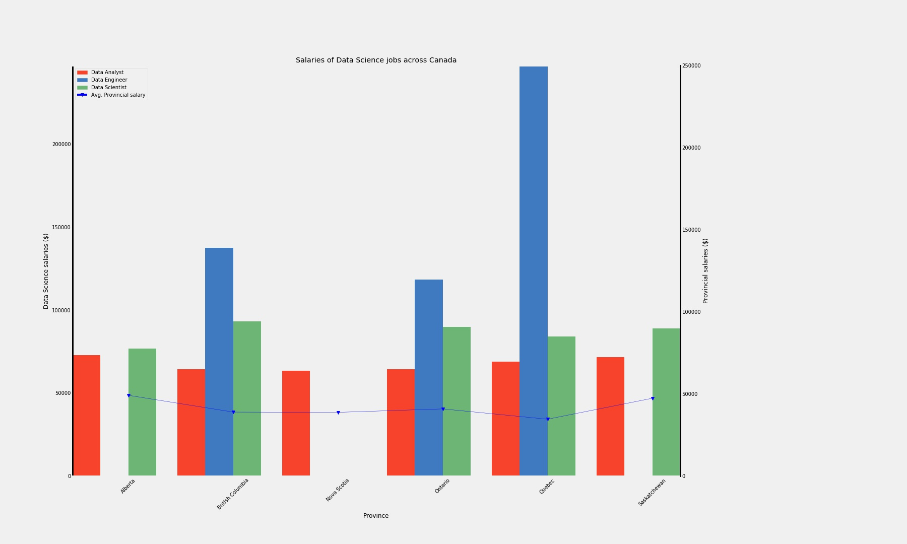

Report
The Canadian Landscape For Data Science Careers, January 2019
Execution Plan
Methods
Using the ETL processes, the following tasks were done:
- Extraction of the Data Science positions and salaries from job search websites
- Extraction of the Cost of Living information for Canadian cities from Numbeo website
- Extraction of the population information for Canadian locations from Statistics Canada website
- Transformation of the Data Science positions data focusing on locations and salary into a dataframe
- Amalgamation and transformation of the Cost of Living and population data into a dataframe based on Canadian Locations and their provinces/territories.
- Transformation Cost of Living and population dataframe to produce a dataframe of aggregated data for each province/territory.
- The Load of all dataframes into a SQL database
- The use of matplotlib for visualization of the relationship between Data Science open positions, their locations, and their related cost of living and population information, through database queries
The methods are described in greater detail below:
Extraction & Transformation of Data Science Jobs, and Salaries
Jobs:The jobs listings were scraped from indeed.ca by searching for 'Data Analyst', 'Data Engineer', and 'Data Scientist' jobs in Canada. A multi-nested loop was created in Python that would extract city, company, job link, job title, location, salary, and company from the most recent 10 pages of listings for each or the three job titles. The script would detect whether the job title contained Analyst, Engineer, Scientist, or non of the above and assign the listing with one of four jobIDs. The script also split location into city and province and created new columns for each. Becuase the postings are dependent on users generating the content, the script had to handle for errors, such as filling location in as Canada rather than city and province, and placing job titles in multiple areas of the post. Variables were set and objects creted inside the loop and appended to an array of job postings outside the loop. Once the job list was created, it was able to be turned into a pandas dataframe for further munging and clean up.
Salaries:The salaries for Data Science jobs were obtained by scraping the website indeed.ca/salaries. A loop was constructed to query the website by modifying the url itself, and if a results table was detected, the loop would then scrape all available data from the table using beautiful soup, and continue to the next page of results as long as a <span> tag with a class (“cmp-pagination-link”) existed. Once results were gathered for all three data science jobs in all provinces, the loop ended and the results were parsed into separate lists for province, job id, job title, salary and a salary classifier (per month, per year etc.). The lists were then used to create a temporary dataframe, which adjusted the salary column to ensure all rows yielded a ‘per/year’ value. The final dataframe then dropped the classifier column, and was exported for loading subsequent analyses.
Extraction & Transformation of Location Data
Whereas career opportunities in the Data Science field is key driver for this project, we also needed to gather the quality of life and population data to assess the locations of these opportunities. The Numbeo website provides information for many cities around the world regarding the cost of living and the quality of life. Because the locations are world-wide, most of the Canadian cities did not have the province that they were located in.
The Statistics Canada website was a great resource to determine the provinces for each of the city information provided by Numbeo. Using the 2016 Census, Population and Dwelling Count Highlight Tables, found in the Statistics Canada website, the city names, their provinces, and associated population and dwelling data provided the opportunity to associate cities found in Numbeo with their provinces, but also gave the added dimension of providing population numbers to normalize Numbeo data.
Both sources of data were collected into two dataframes, one based on cities that included cost of living & quality of life indices, and population and dwelling counts, and based on provinces using aggregated measurements of the cities. Both dataframes were then exported as csv files to be used to load the My SQL database used for this project.
Extraction & Transformation of Cost of Living Data from Numbeo
The Numbeo website provided Cost of Living, Property Prices, Crime, Health Care, Pollution, Quality of Life, and Travel data for locations around the world. The website provides the means of entering and selecting world cities and displaying their related data above. Fortunately, Numbeo also provides API functionality if you have been approved and provided an API key. The project team requested an API-Key for education purposes (free) which was granted and provided the next day.
Extraction first occurred with getting all cities in Numbeo using the following url query:
https://www.numbeo.com/api/cities?api_key=[API_KEY]
The response included a list of cities with a Numbeo city_id as a unique identifier, city name, country name, longitude, and latitude coordinates. A dataframe was created based on filtering the response for only rows with the country name of ‘Canada’. The city names provided by Numbeo were not entirely clean as a very small percentage included province codes within the name. Python was used to split city name to move the province code if it existed to another column. The script was also adjusted to change Numbeo city names to exactly match the city names listed in the Stats Canada data.
Extraction & Transformation of Popuation Data from Stats Canada
Statistics Canada provides a publicly available csv file with the Population and Dwelling Count Highlight Tables from the 2016 Census. This csv file, located in the repository folder 1_Input as T301EN.CSV can be downloaded at the following url:
https://www12.statcan.gc.ca/census-recensement/2016/dp-pd/hlt-fst/pd-pl/Table.cfm?Lang=Eng&T=301&S=3&O=D
This csv file was extracted as a dataframe and revised to only include population, number of private dwellings, land area (sq. km), population density per sq. km for each location regardless of location type (village, town, city, township, etc.). All other columns, including French equivalent columns were removed from the dataframe.
Merging of Cost of Living Population Data based on Canadian Location
Using the Canadian cities dataframe extracted from Numbeo (see Subsection 2.2.1 above) and the Stats Canada dataframe, both dataframes were left-merged based on the city / location name. This led to the dropping of any Canadian locations from Statistics Canada data which were not found in the Numbeo list of Canadian Cities.
This also led to the discovery that multiple rows were created because the city name listed from Numbeo had multiple listings in the Stats Canada data. For example, the name Beaumont are found in Alberta, Newfoundland, and Quebec. Other discrepancies included Minden being listed as Minden Hills in Numbeo, but as Minden in Statistics Canada. And some names existed in the same province as both a Town and a Township. The other issue was the discovery that Numbeo listings were not finding an equivalent location in Statistics Canada data because of accents, this included well known cities as Montreal. These discrepancies were manually identified, with the purpose of including the correct corresponding Statistics Canada data using the latitude and longitude provided by Numbeo to ensure each row had the correct province assigned.
Additional python code was added to correct these discrepancies for either tables, whether it was to change the name to remove accents or remove spelling discrepancies, and the merge was executed again. After this left merge, the combined dataframe still had Numbeo rows with no corresponding Statistics Canada data. Code was then used to assign the provincial code based on the previous manual look up of the geographic coordinates.
Extraction & Transformation of Cost of Living of Numbeo Locations
Using the combined dataframe, a loop was used to query Numbeo to get the Cost of Living Data using the Numbeo City ID. The following query was used:
https://www.numbeo.com/api/city_prices?api_key=[API-KEY]&city_id=[CITY_ID]
From the response, the following data was extracted for each city:
- Monthly rent for 3-bedroom apartment in the city centre
- Property price per square feet
- Average monthly net salary
These values were added as columns to the combined dataframe.
To include the Cost of Living Index and the Quality of Life Index to these locations, another loop was executed for each row that queried the database based on the city_id:
https://www.numbeo.com/api/indices?api_key=[API-KEY]&city_id=[CITY_ID]
From the response, the following data was extracted for each city:
- Cost of Living Index
- Quality of Life Index
Final Transformation and Loading of Data to SQL Database
Before loading data into SQL, the extracted inputs needed to be transformed relative to each other to ensure clean data is loaded. The file used to do the final transformation and load into SQL is ‘Transform_IntoSQL.jpynb’.
The extracted inputs to this file are as follows:
- ca scrape for salaries of Data Analyst, Data Scientist, Data Engineer by province in csv form (Salary_extracted_input.csv).
- ca scrape for job postings for Data Analyst, Data Engineer, Data Scientist positions in Canada is csv form (Job_Posting_extracted_input.csv)
- Canadian city information from Stats Canada API and Numbeo API in csv form (complete_city_df.csv)
- Canadian province information from Stats Canada API and Numbeo API in csv form (province_df.csv)
The purpose of this section of the project is to create 5 clean tables that are interlinked and loaded onto MySQL. The 5 tables are: Job_Class, Jobs, Cities, Provinces, Salaries.
Job_Class Table
The job_Class table was a manually made dataframe to assign a Class_ID (eventually will act as primary key in SQL) to Data Analyst, Data Engineer, and Data Scientist. We included an Other job_Class because the job posting scrap yielded job titles other than Data Analyst, Data Engineer, and Data Scientist, and we did not want to discard them as they had ‘Data’ in the job title.
Provinces Table
The base of the provinces table was made from a pd.read_html scrape of the Wikipedia page for Canadian provinces. It was merged with the province_df.csv on the province abbreviation. Each province was given a province_ID that will act as a primary key in SQL. ‘Other’ was also included in the provinces table because some of the cities yielded from the job postings scrape of indeed.ca could not be matched to city on the city table and therefore could not be matched to a province.
Salaries Table
The salaries table needed to be merged with the job_Class Table and Province Table. Prior to the merges, the provinces column of the raw salaries table (from the Salary_extracted_input.csv) needed to be match the provinces column of the provinces table in terms of string. The python library ‘fuzzy wuzzy’ (string matching library) was used to accomplish this.
Cities Table
The raw city table (from complete_city_df.csv) needed to be merged with the provinces table. Prior to merging, an ‘Other’ city needed to be created with ‘Other’ as the province because the jobs table included cities that are not in the city table that will be categories under ‘Other’. A unique city_ID is assigned to all the cities in the city table (to act as the primary key in SQL).
Jobs Table
The raw data of the jobs table (Job_Posting_extracted_input.csv) included columns city, company, job title, province, and summary. This table needed to be merged with the job_class table, provinces table, and city table. Prior to the merges, several steps had to be performed to ensure clean merges:
- Python library unidecode was used on the city column to remove any accents from the French cities (as the city table did not include city names with accents).
- A list of cities that were in the jobs table but not in the city table were generated. The python library ‘fuzzy wuzzy’ with a score cutoff (80) was used to determine any semantic differences (e.g. Toronto vs. Greater Toronto Area, St. Catherines vs. St. Catharines, Saanich vs. North Saanich). Cities in the jobs table identified to have minor semantic differences to cities in the cities table were changed. All remaining cities in the jobs table that were not in the cities table were categoried under ‘Other’.
- The provinces in the jobs table were also corrected with fuzzy wuzzy as mentioned before.
Load onto SQL
The final dataframes for the job_Class, provinces, cities, salaries, and jobs were loaded onto SQL through python by creating an engine and using the pd.to_sql method. Primary keys were set using the engine.execute method where the SQL query 'ALTER TABLE `table name` ADD PRIMARY KEY (`column name`);' was called.
Final Database
Figure 1 below shows the final database loaded into MySQL. The black lines denote the connections between the tables (i.e. similar to foreign keys).
Figure 1: Project ETL Data Model
Findings
The following data relationships were explored:
- The Distribution of Data Science Jobs Across Canada
- The Comparison of Data Science Average Salaries Across Canada
- The Top 5 Cities with the most Data Science Job Opportunites
- The Top 5 Cities with the most Earning Power for Data Science Jobs
Visualization of these relationships will show the locations in Canada where people desiring a Data Science career will have the best opportunities to not only find a job, but to have a higher quality of life.
Job Distribution Across Canada
All job data were aggregated based on province where they are located, and job class: Data Analyst, Data Engineer, Data Scientist, and Other. The following bar graph displays the number of postings for each job class in each of the provinces. The Cost of Living and Quality of Life indices are overlayed to show each province.

Figure 2: Distribution of Data Science Jobs Across Canada
Ontario, Quebec, and British Columbia (BC) appear to have the highest variety of data science jobs available in the country. In fact, three of these provinces account for ≈ 90% of the data science jobs in the country. However, when adjusted for population, an interesting pattern emerges. Ontario and BC have nearly the same amount of data science jobs per 100,000 people, while Quebec falls quite a bit shorter. This may suggest that competition in Quebec will be considerably higher than in Ontario and BC.
Interestingly, Alberta, PEI and Sasketchwan all have data science opportunities that are in line with Ontario and BC, however given their slightly higher cost of living index, the salary attained in these provinces should be considerably higher in order to convince an individual to forego pursuing opportunities in Ontario, BC, and Quebec, where the cost of living index is quite a bit lower, presumably because these provinces tend to pay higher salaries than the national average. However, it should be noted that PEI has one of the highest quality of life scores across the country, making it a very viable option.
Average Salaries Across Canada
The average salaries for the different job classes in Data Science were aggregated based on province. The following bar graph displays average salaries of those job classes along with a data line plotting the average salaries of each province calculated from the Statistics Canada data
Figure 3: Average Annual Salary of Data Science Positions vs. the Annual Salary by Province
From Figure 3, the average annual salaries for Data Science positions are greater than the average annual salary of other positions across all provinces. Salary comparison of these Data Science postings show that data engineers command the highest average salary, while the data analysts earn the lowest.
Provincially, the earning power for data engineers in Quebec earn more than four times the Quebec provincial average. In fact, job postings for data engineers are the highest nationally in a province with the lowest provincial average salary. Posting for data engineers in BC are equivalent to three times the provincial average salary.
The salary of data scientist positions are very similar across all provinces, with the highest in BC followed closely by Ontario.
Similarly, the data analysts also have very similar salaries across the provinces, with the highest salaries offered in Alberta and Saskatchewan.
Conclusions
Based on the findings the following can be asserted:
- The demand for data analysts (in comparison to the provincial population) is highest in the Yukon Territories. There is no corresponding Cost of Living and Quality of Life indices to evaluate location for that demand.
- The demand for data engineers (in comparison to the provincial population) is highest in the Northwest Territories. Unfortunately, the Cost of Living index is the highest in that territory.
- Ontario has the highest demand for data scientists (in comparison to the provincial population). The province has Cost of Living and Quality of Life indices that are midway in comparison to the rest of Canada
- Ontario, Quebec, and British Columbia (BC) appear to have the highest variety of Data Science jobs available in the country. In fact, three of these provinces account for ≈ 90% of the Data Science jobs in the country. However, when adjusted for population, an interesting pattern emerges. Ontario and BC have nearly the same amount of Data Science jobs per 100,000 people, while Quebec falls quite a bit shorter. This may suggest that competition in Quebec will be considerably higher than in Ontario and BC.
- Interestingly, Alberta, PEI and Sasketchwan all have Data Science opportunities that are in line with Ontario and BC, however given their slightly higher cost of living index, the salary attained in these provinces should be considerably higher in order to convince an individual to forego pursuing opportunities in Ontario, BC, and Quebec, where the cost of living index is quite a bit lower, presumably because these provinces tend to pay higher salaries than the national average. However, it should be noted that PEI has one of the highest quality of life scores across the country, making it a very viable option.
- The average annual salaries for Data Science positions are greater than the average annual salary of other positions across all provinces.
- Salary comparison of these Data Science postings show that data engineers command the highest average salary, while the data analysts earn the lowest.
- Provincially, the earning power for data engineers in Quebec earn more than four times the Quebec provincial average. In fact, job postings for data engineers are the highest nationally in a province with the lowest provincial average salary.
- Salaries offered in postings for data engineers in BC are equivalent to three times the provincial average salary.
- The average salary of data scientist positions is very similar across all provinces, with the highest in BC followed closely by Ontario.
- Similarly, the data analysts also have very similar salaries across the provinces, with the highest salaries offered in Alberta and Saskatchewan.
With job postings offering the highest salaries, in a province with lower Cost of Living and an average Quality of Life, the best opportunities would be in Quebec.
Discussion
The following are items and issues that were encountered during this project, and should be further discussed to provide insight on the observations and conclusions.
Issues with Job data
The original plan was to include job listings from the job search websites of Indeed and Glassdoor. Unfortunately, Glassdoor could not be used as one of the sources. And because of time, no other source was used.
Additional sources would increase the sample size to strengthen the validity of any conclusions.
Incompleteness of Numbeo Data
The Numbeo website provides a lot of different information about cities around the world. Unfortunately not all cities have all the measurements that Numbeo provides. The Quality of Life index and the Cost of Living Index was not available for most of the Canadian cities listed in the Numbeo website. There were jobs in locations that did not have any Numbeo metrics, as there were Numbeo cities that may not have any Data Science job postings.
By aggregating the data, we had hoped to get some correlation between job opportunities and Cost of Living and Quality of Life indices. The issue that is apparent is that Canadian provinces have varied measurements in different locations. Larger cities may be more expensive to live, but may not reflect life in rural areas. The number of data points used in aggregation may be too small to realistically describe the cost of living at a provincial level.
Issues regarding correlating data from different sources
The most time-consuming issue was correlating data from different sources quickly and effortlessly. Canada is a country with two official languages, and names may include accents and characters that may not be reflected in the names used by various sources.
As well, there are names of locations that are found in different provinces, and even two locations in the same province. Beaumont is found in 3 different provinces. If Numbeo had data for Beaumont, Canada, which of the 3 locations does it belong to? There are some names that may be found as both a Township and a Village in the same province. Luckily Numbeo provided geographical coordinates for their locations. Some Numbeo cities had different names than what the geographic coordinates would determine (example Cooksville and Mississauga). With the expected aggregation of data it was important to ensure that the province was added for the Numbeo locations.
Merging of the dataframes would result in multiple lines being created for the same location name. A manual cleaning process was required to ensure the cleanest merge. Unfortunately, the process of cleaning the data before merging was was time consuming, looking through hundreds of rows, determining which data source had the issue during the merge, the data source name to ensure we get sources properly merged for complete data, and then using geographic lookup website to determine the provincial codes for the dozens of Numbeo data rows that didn’t’ have a matching name in the Statistics Canada data.
Perhaps if these issues were identified early in the process, an automated cleaning and geographic lookup process could be built. But it was difficult to determine if the time to build and debug this automated process would be shorter than just manually identifying the issues individually and adding code to correct the offending values.
Ultimately, this cleaning process took time away from meaningful analysis.
Appendix A: Script Execution Plan
The following are the script designs of the three scripts used in the performance testing. This provides a clear understanding of the steps used when recording the script, the data selected during recording, the variable names used, data preparation instructions, and the LoadRunner transaction names and the functional steps they comprise.
The first script could not be recorded as a LoadRunner script, but the script design document provided clear instructions on how to manually execute the functionality.
Appendix B: Repository Folder Structure
The repository was intended to be a working structure to compartmentalize the locations of assets created or used for this project.
The following the repository folder structure and what purpose it was to hold.
|
Folder Name |
Purpose |
|
0_Reference |
Contains non code reference material including possible pictures to be used for report, the Project Proposal, and the ProjectStandards |
|
1_Input |
Any datafiles that were downloaded from a website data source |
|
1_Extracted_inputs |
Any data files the are the product of python script to be used as data input in another python script |
|
2_InterimCode |
Working area to keep python files in progress |
|
3_Output |
Any images created by our python script |
|
4_DB |
All pertinent website files |
|
5_InterimReport |
Working area to keep the report as it in progress |
|
6_FinalCode |
After all code is complete, this will be the location of all the python scripts |
|
7_FinalReport |
The final report to be submitted |